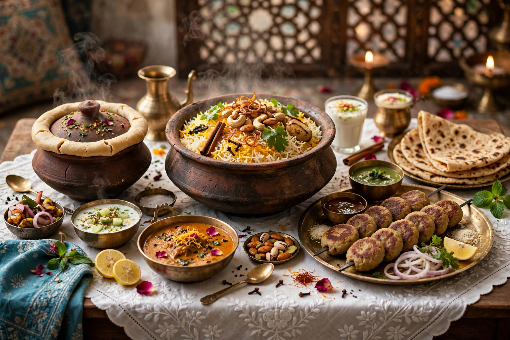

Awadhi cuisine is the cooking tradition of the Awadh region of northern India, centred on Lucknow, the capital of Uttar Pradesh. Developed in the courts of the Nawabs of Awadh, it is famed for its refined, slow-cooked dishes, fragrant biryanis, and kebabs, and for the dum pukht technique of sealing and slow-steaming food.

Awadhi khansamas (chefs) blended Mughlai and Persian influences with local ingredients, using whole spices, saffron, kewra water, and slow cooking over gentle heat. The tradition shaped restaurant cooking across North India; the modern Dum Pukht restaurant style popularised by ITC hotels derives from it.
Lucknow · Mughlai cuisine · Biryani
Recreated from memory.